1、解决方案
1.1 概述
多个项目建立在一起的集合被称为解决方案，火山软件开发平台采用的是多项目多文件管理模式，一个解决方案内可以放N个项目，一个项目内可以有N个火山源码文件。
例如：要开发一个软件，预计升级多个版本，你想保留历史版本的源代码，那么就可以都把这些历史版本的源代码放在一个解决方案中便于管理。
1.2 创建项目
创建一个新的项目时会自动依赖一个解决方案，如下图所示进行创建：
(1) 可通过“文件 -> 新建 -> 项目”或直接点击欢迎页中的“新建项目”都可以实现创建项目。
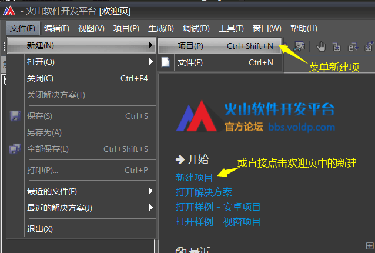
(2) 根据自己的需求选择平台及目标平台的项目模板，并依次填写项目名称、选择所处(保存)位置、解决方案名称，最后点击确定即可。
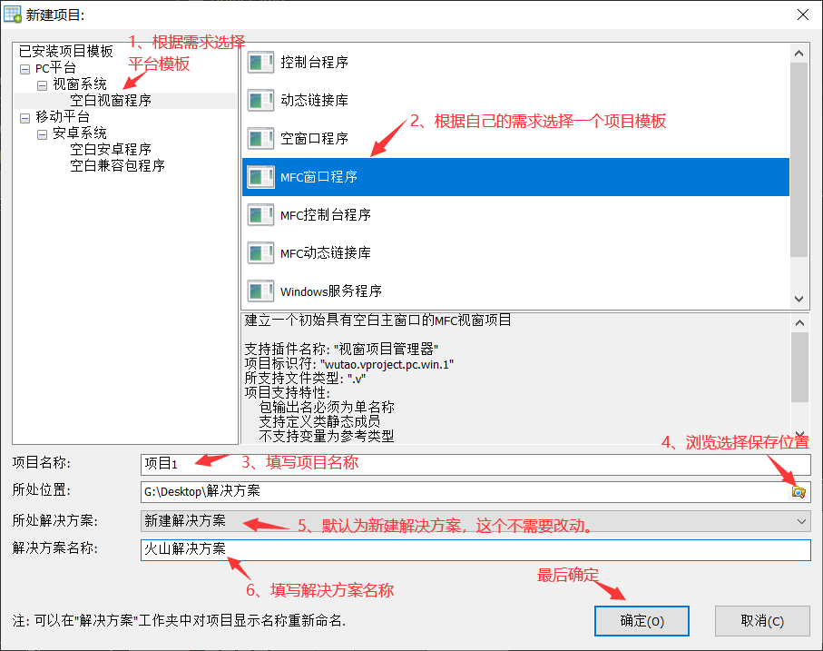
(3) 如果“所处位置”不存在会提示进行创建，点击“是”进行创建即可。
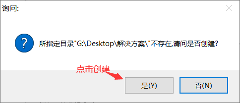
(4) 最后创建成功后如下图，其中解决方案/项目/源文件名称都可以通过双击进行修改。
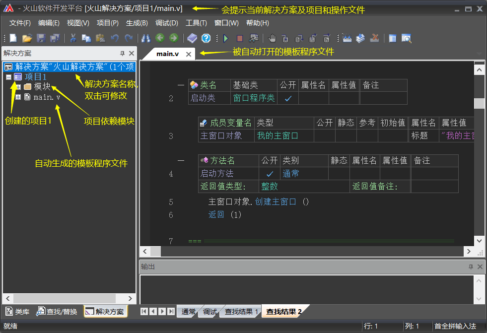
1.3 解决方案目录结构概述
在创建了一个项目后，会在“所处位置”目录中生成“解决方案文件”和“项目文件夹”。
注：这些生成的项目文件或文件夹不允许随意修改其名称，否则会导致项目无法打开。
(1) 解决方法文件后缀名为“vsln”，启动火山项目时，双击此文件即可打开。
(2) 项目文件夹中存储有当前项目源码数据。
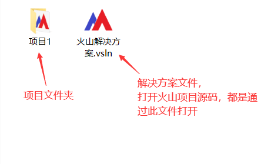
打开项目文件夹，可以看到一个“src”的文件夹和后缀名为“vprj”的项目配置文件。
(1) 项目配置文件中存储有当前项目所有配置信息。
(2) 自动生成的主程序模板文件，位于src文件夹中。
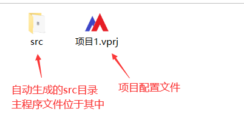
打开src文件夹就可以看到自动生成的主程序模板文件。
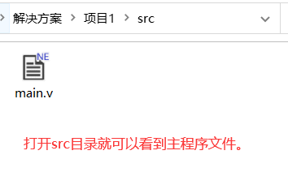
当程序进行调试或编译发布版时，会自动在解决方案所处目录中，生成一个“_int”文件夹，用于输出目标平台的源码文件和项目程序文件。
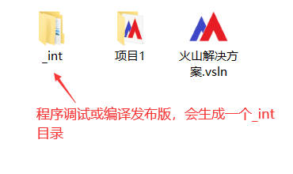
安卓平台和视窗平台的程序输出路径分别如下：
(1) 安卓平台程序默认输出路径：
调试版程序默认输出在：“_int\项目文件名\debug\linker”目录中。
发布版程序默认输出在：“_int\项目文件名\release\linker”目录中。
(2) 视窗平台程序默认输出路径：
调试版程序默认输出在：“_int\项目文件名\debug\x64(或win32)\linker”目录中。
发布版程序默认输出在：“_int\项目文件名\release\x64(或win32)\linker”目录中。
注：x64指64位程序，win32指32位程序。
“_int”文件夹可以自定义其保存位置，通过右键解决方案选择属性菜单，通过设置“编译中间数据目录”即可自定义位置。
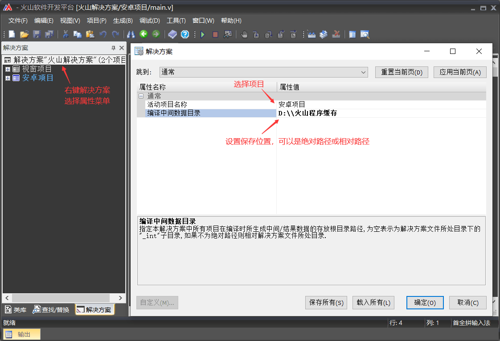
2、项目管理
2.1 多文件管理
火山平台中的项目是支持多文件管理的。
例如：软件中有多个窗口，可以建立多个火山源码文件，一个文件中存放一个窗口类，可便于后期软件维护。
(1) 鼠标右键项目选择“添加 -> 新建文件”。
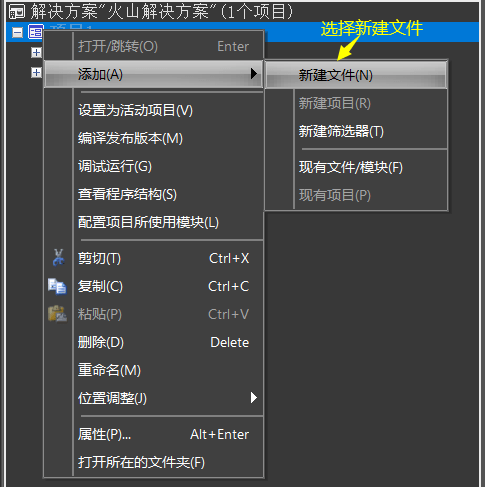
(2) 在新建文档窗口中，填写文件名，选择所处位置(默认为当前项目目录，建议保持原样)。
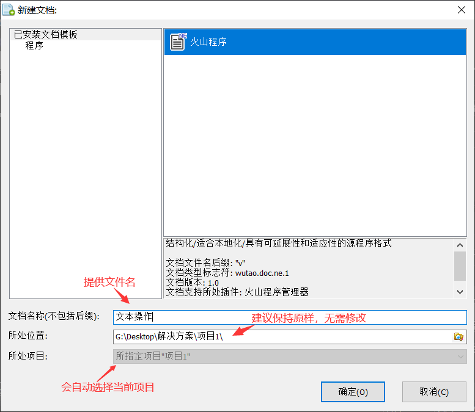
(3) 文件创建完毕后如下图：
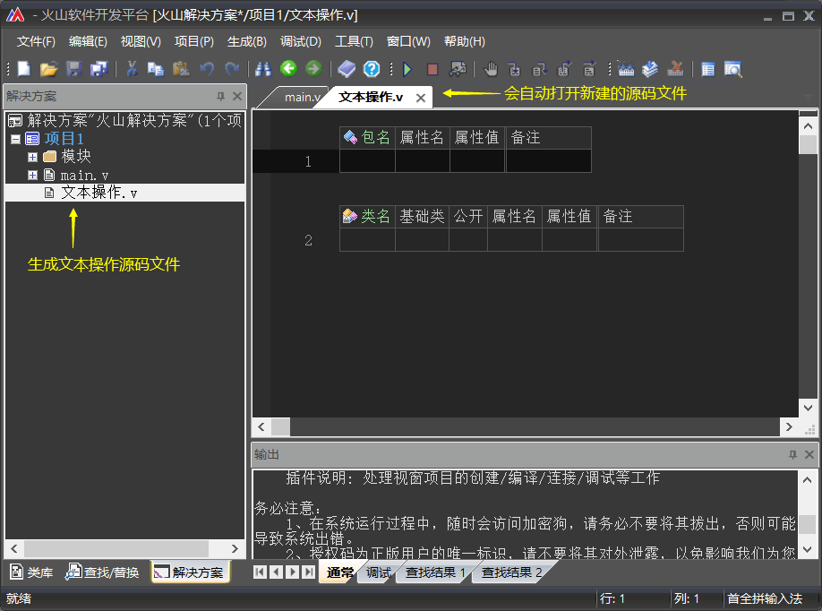
(4) 如果软件有多个功能模块或窗口，可以创建多个源码文件来管理。
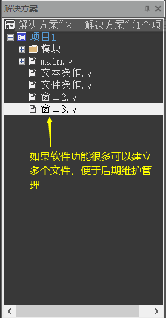
(5) 创建完毕后的火山源码文件会出现在“所处位置”的目录中。
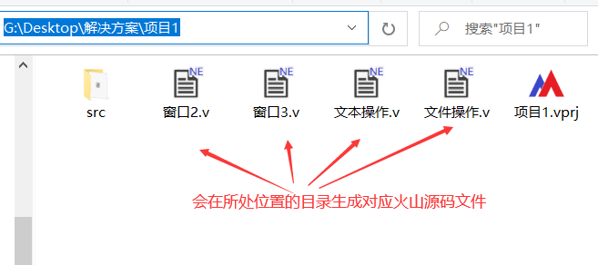
(6) 如果项目文件过多，还可以通过建立筛选器来进行二次分类。
右键项目选择“添加 -> 新建筛选器”。
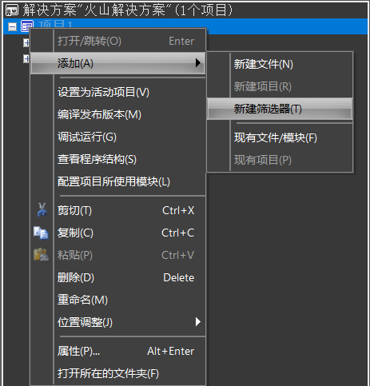
(7) 建立后可以通过右键进行重命名。
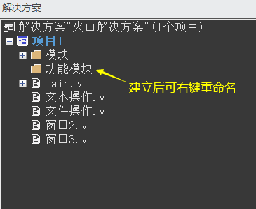
(8) 筛选器建立完成后，可以通过点击鼠标左键拖拽火山源码文件到目标筛选器中。
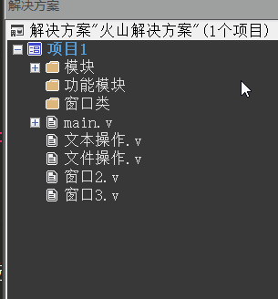
2.2 多项目管理
火山平台支持在解决方案中建立多个项目进行管理，不同平台之间也可以混合建立。
如下所示：
(1) 右键解决方案选择“添加 -> 新建项目”，就可以进行项目建立。
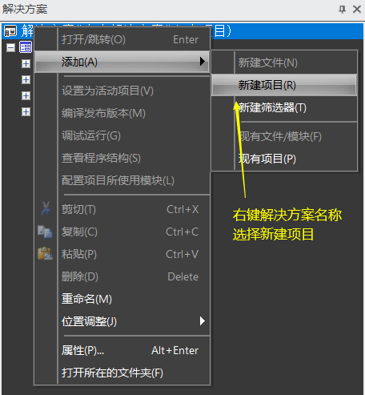
(2) 在新建项目窗口中，选择一个平台和项目模板，输入项目名称后点击确定即可建立一个新的项目。
注：所处位置默认会填写当前解决方案路径，建议保持原样即可。
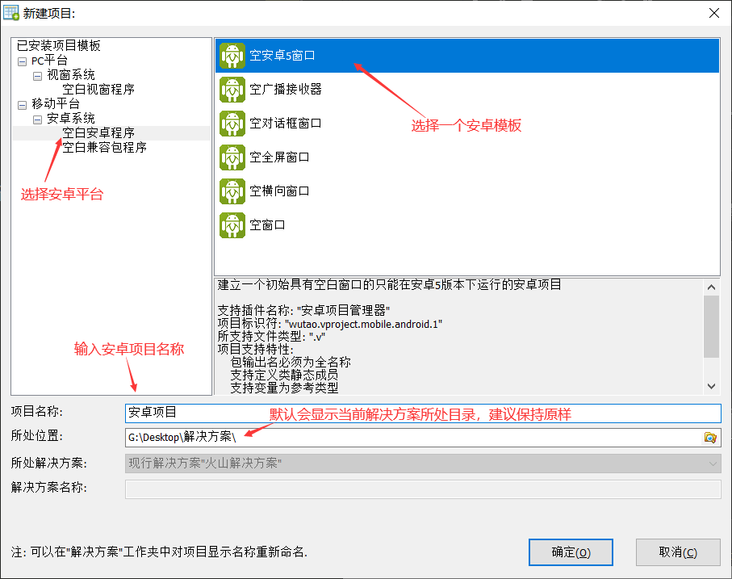
(3) 项目建立成功后，会自动设置新项目为活动项目。
活动项目：即当前操作项目。
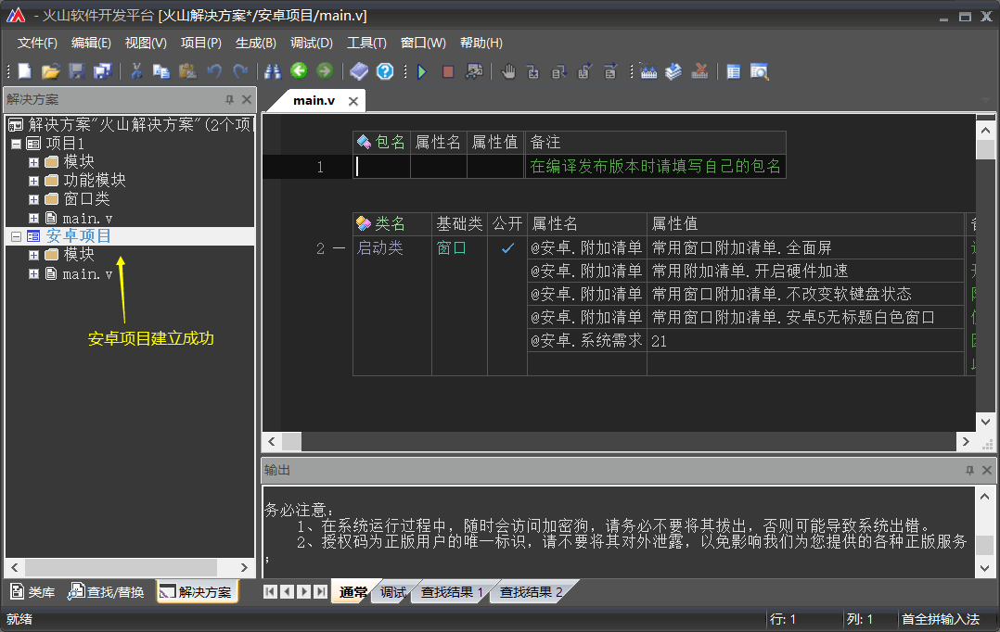
(4) 切换活动项目，通过项目的右键菜单中可以直接切换。
注：活动项目切换后，项目文本颜色会发生变化。
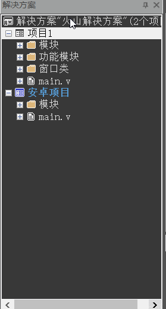
如果打开了很多火山源文件，也可以通过文件名右键设置活动项目，如下所示：
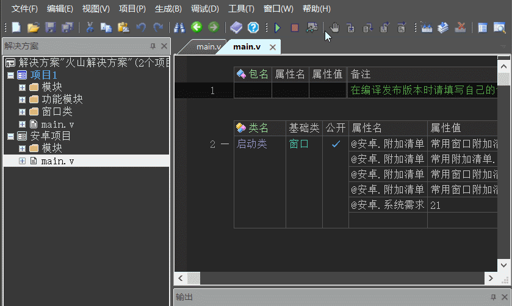
(5) 项目建立后，可在“所处位置”指定的路径中看到新项目文件夹，每个项目都会依赖一个文件夹。
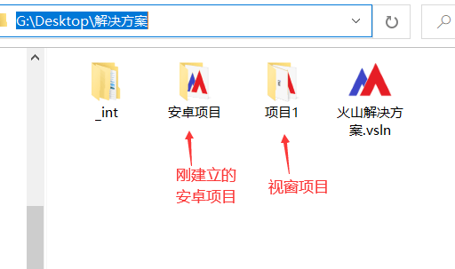
3、项目模块
3.1 模块配置
在火山中每个项目都可以独立配置进行模块(即火山类库)配置，模块不可以跨平台配置，例如：安卓项目无法配置视窗模块。
模块配置方法如下：
(1) 右键项目配置
如果某项目想要配置模块，可通过右键此项目进行配置模块。
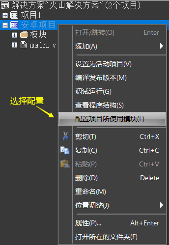
在弹出的模块配置窗口中，勾选要配置的模块点击“确定”即可。
注：如果想要删除某些模块，取消勾选即可。
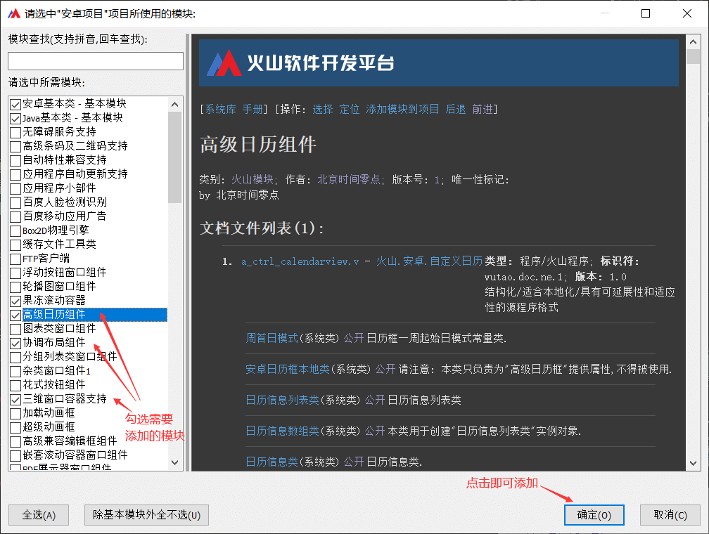
会提示正在添加哪些模块，确认无误后直接点击“确定”即可。
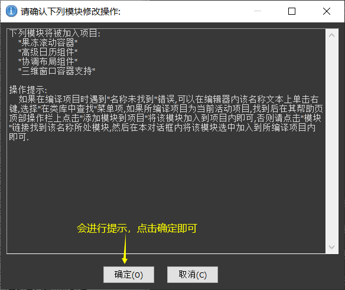
添加成功后，可在项目的“模块”分类下看到被添加的模块。
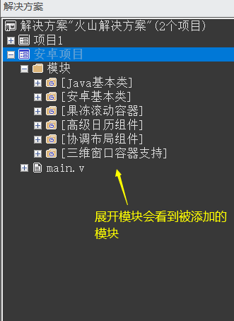
(2) 类库夹中右键配置
右键要配置的模块，选择“将此模块加入项目XX”，这里会自动选择当前活动项目进行模块配置。
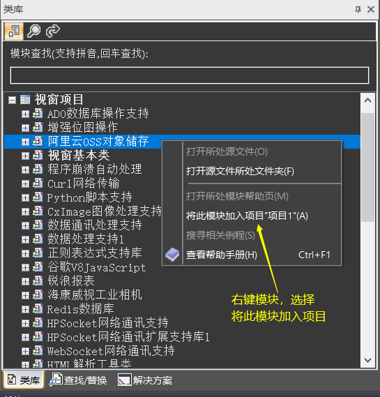
配置成功后可以在当前活动项目中看到此模块。
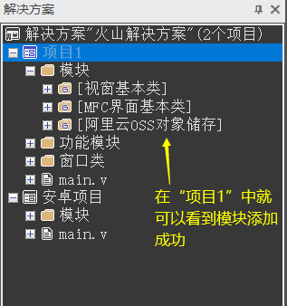
(3) 在帮助页中配置
例如：在进行类库功能搜索时，双击搜索结果打开帮助页，可以在帮助页中将此类所处的模块添加到当前活动项目中。
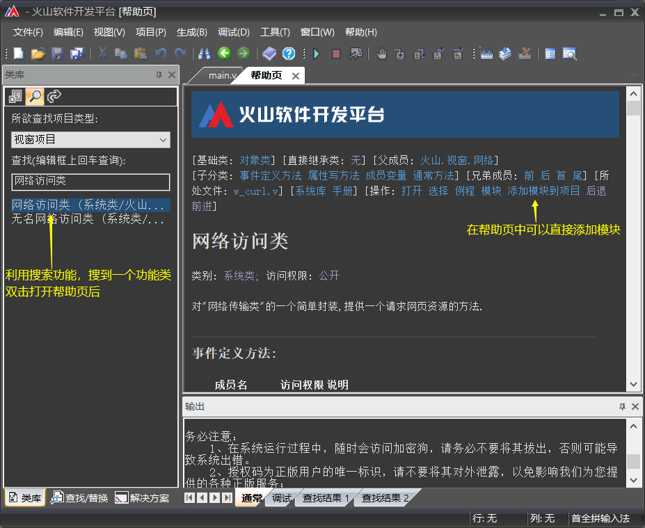
添加成功后可以在项目中看到此模块。
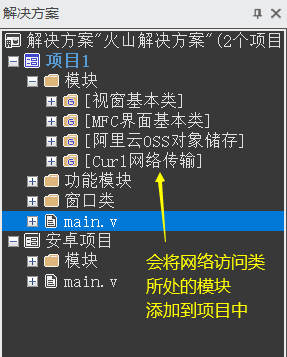
删除模块配置方法如下：
右键要删除的模块，选择“删除”即可。
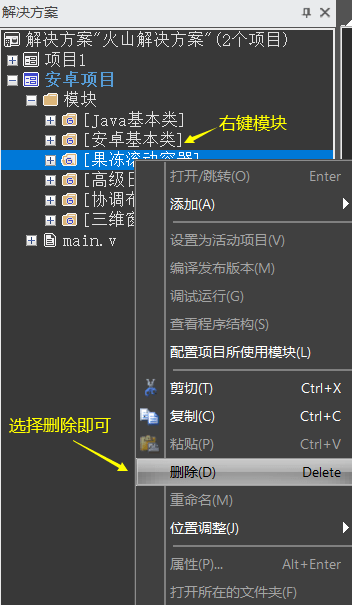
3.2 模块安装
火山平台模块的后缀名为vcip，模块安装时火山平台会自动识别安装到视窗模块中还是安卓模块中，安装后将会出现在类库夹中。
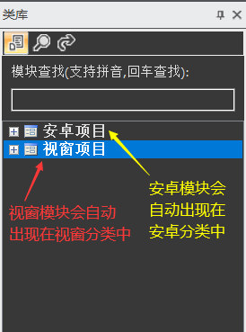
模块安装方式如下：
双击模块文件即可安装。
也可以通过“工具->安装模块”进行模块安装。
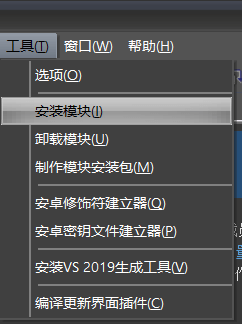
3.3 模块卸载
选择“工具-卸载模块”即可卸载第三方模块。
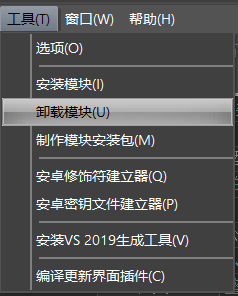
(1) 选择要卸载的平台。
(2) 勾选要卸载的模块，点击“卸载”即可。
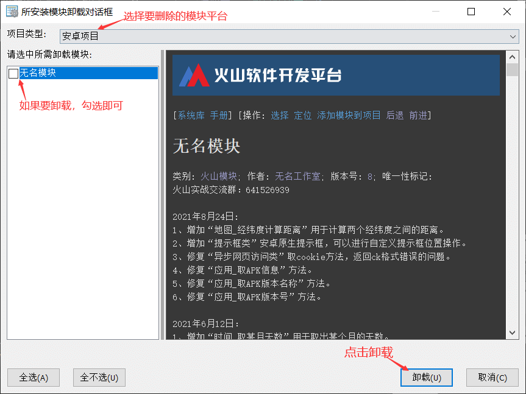
3.4 模块制作
模块制作可参考《类库模块的封装和使用方法》文中的介绍。
4、部件程序
4.1 部件
4.1.1 概述
“部件”是火山中提供的一种加密版的火山文件，后缀名为“.wcv”，可用于闭源代码分享。
分享的部件无法查看其火山源码，只能看到被公开的方法接口。
其效果如下：
在火山源文件进行部件处理后，只能看到方法接口，无法看到具体的程序源码。
注：部件程序只能隐藏火山源码，并不能真正将源代码隐藏起来。
譬如：安卓平台编译后依然可以看到java源码，视窗平台编译后依然可以看到C++源码。
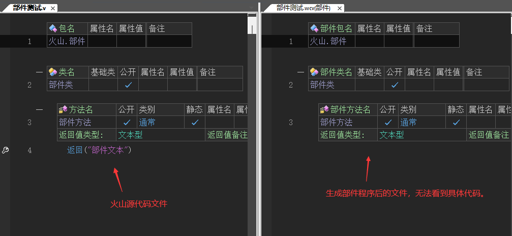
4.1.2 生成部件程序
右键火山源文件选择“生成部件程序”即可将当前火山源文件转换为部件程序。
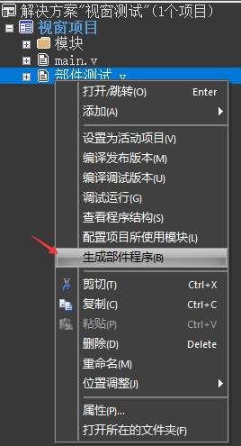
如果当前整个项目都需要生成部件程序，可以点击“生成-生成部件项目程序”菜单进行操作。
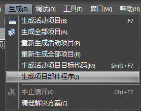
会弹出一个窗口列出所有的火山源文件，可以选择“生成”或“合并生成”，前者为每个火山文件独立生成，后者则会将多个火山源文件合并成一个文件。
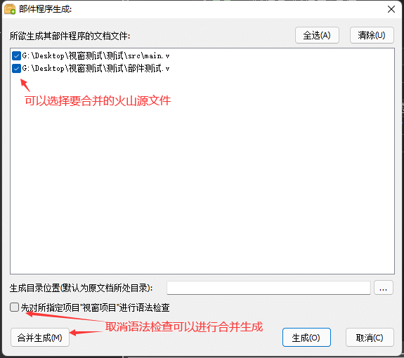
4.1.3 引用部件程序
部件程序的引用和普通火山文件的引用方式一致，通过项目菜单选择“添加-现有文件/模块”。
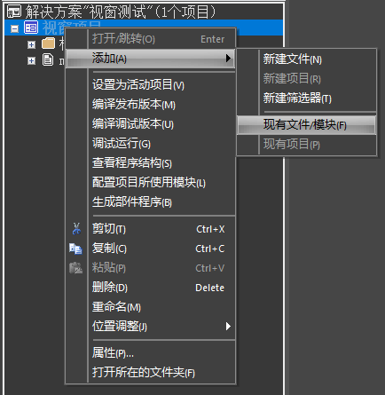
然后选择要添加的部件即可，进行添加即可。
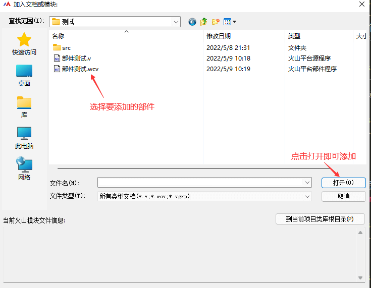
添加后双击部件文件即可查看部件接口。
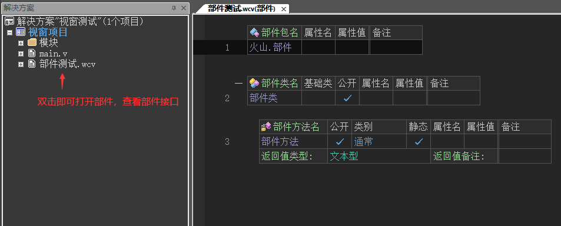
4.2 部件DLL
部件DLL为火山视窗平台独有功能，安卓平台无法使用。
“部件DLL动态链接库”和普通的“DLL动态链接库”没有本质的区别，都是动态链接库。只是前者在编译DLL时会自动生成其火山接口程序，方便他人使用其DLL中的功能，并且由于相关实现代码位于编译后的DLL中，因此安全性是绝对有保证的，可广泛应用于多人协作或闭源项目中。
具体使用方式可看《易语言到火山视窗入门》中的介绍。